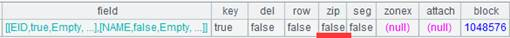
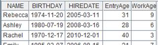

Description:
Add fields to records in a channel.
Syntax:
ch.derive(xi :Fi,…)
Note:
The function adds Fi,… field(s) to channel ch to generate a new channel consisting of the original fields and the new field(s) by traversing records of ch to assign each Fi with value xi. This is an attached computation.
Parameters:
|
ch |
Channel |
|
Fi |
Field name, which shouldn’t be same as one of the existing ones |
|
xi |
An expression, whose results will be the values of the new fields |
Options:
|
@i |
Won’t generate a corresponding record if there is expression xi and its result is null; won’t affect the field values of existing fields. |
Return value:
Channel
Example:
|
|
A |
|
|
1 |
=demo.cursor("select NAME,BIRTHDAY,HIREDATE from Employee") |
|
|
2 |
=file("D:\\txt_files\\data1.txt").cursor@t() |
Below is data1.txt：  |
|
3 |
=channel() |
Create a channel |
|
4 |
=channel() |
Create a channel |
|
5 |
=A3.derive(interval@y(BIRTHDAY,HIREDATE):EntryAge, age(HIREDATE):WorkAge) |
Add EntryAge field and WorkAge field in A3’s channel |
|
6 |
=A3.fetch() |
Attach ch.fetch() function that gets the final result set to A3’s channel to fetch and store the existing data in the channel |
|
7 |
=A4.derive@i(SCORE:score_not_null) |
Won’t genearate the corresponding record if a SCORE value is null |
|
8 |
=A4.fetch() |
Attach ch.fetch() function that gets the final result set to A4’s channel |
|
9 |
=A1.push(A3) |
Be ready to push A1’s data into A3’s channel, but the action needs to wait |
|
10 |
=A2.push(A4) |
Push data in A2’s cursor into A4’s channel |
|
11 |
=A1.skip() |
Data in A1’s cursor is pushed into the channel and operations are performed as the skip() operation is performed over A1 |
|
12 |
=A3.result() |
 |
|
13 |
=A4.result() |
|